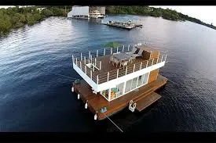

Destaque
Guia dos mercados e feiras de Manaus
Onde encontrar peixe fresco, frutas amazônicas e artesanato local.
Ler mais
Onde encontrar peixe fresco, frutas amazônicas e artesanato local.
Ler mais
Os espaços de lazer mais procurados nas águas do igarapé mais famoso de Manaus.

Do tradicional na brasa aos pratos autorais, os melhores endereços da cidade.